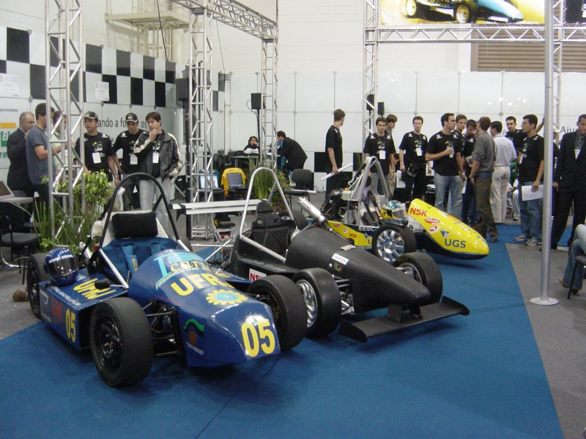
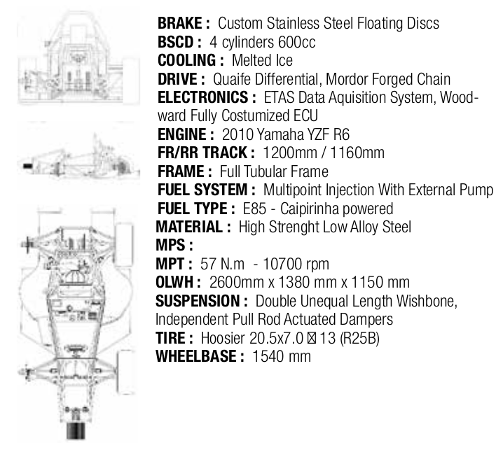
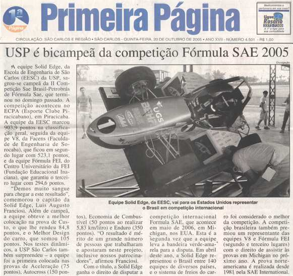
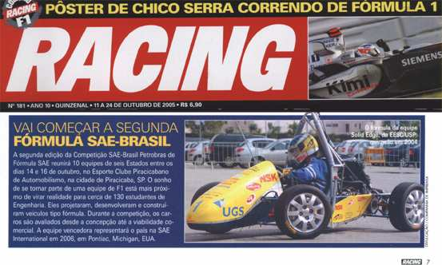

Esse site contém um compilado de conteúdos e reflexões elaborados durante um período de participação como membro de equipe de
Formula SAE 08-14. A ideia é prover um material acelerador para as equipes e estimular a documentação/passagem de conhecimento.
Atenção! As ideias expostas refletem uma visão enviesada de uma
pessoa dentro de um contexto de equipe e tecnologias da época, portanto deve ser filtrado/criticado para determinar o que é util ao leitor.
Históricos – Geral
arquivo
zip com todos resultados do FSAEB até 2019 (inserir tb como
gráfico iterativo chart.js)

Carros da 1ª Competição FSAE Brasil
(2004)Reportagem da revista da SAE Brasil
sobre a 1ª competição FSAEB

Descrição iconica da Unicamp
combustão no Event Guide de Lincoln 2014

Recorte de jornal de
2005

Recorte de revista de
2005
Apresentação historia
pptx to reveal.js
Tópicos:
Vocês sabiam que nesse mês a equipe completa 12
anos?
. Falar um pouco da história do FSAE global
. Foco nos primeiros carros e competições: sementinha da
história.
. Ressalva: falar da história é complicado, corre-se o risco de
confundir datas, nomes e se basear em especulações. Tentarei ser o
mais fiel aos dados possível
USA “1979”:
On-road Mini-Baja: SAE Mini-Indy
Motor 5hp padrão
11 equipes competiram
1980
Não houve
1981: Fazer novamente Mini-Indy com mudanças:
Regras mais abertas: minimizar regras de motor
Qualquer motor 4 tempos + restritor 1”
Novo nome! ⇒ Formula SAE
4 competidores
4: Foto mais carros
5: Video Enduro de Michigan de 1993: ir 10s
6: No Brasil + Início da equipe
--->PERGUNTA! >Perguntar plateia onde estavam em Junho de
2003
junho/2003
Fundação da equipe: Prof. Álvaro + membros do Mini-Baja
(maioria); Participação da 1ª Competição (em 2004).
EESC-USP Mini Baja sagrou-se tetracampeã brasileira.
A Equipe EESC-USP Aerodesign sagrou-se bicampeã brasileira e
campeã mundial
Protótipo E1: 1º no Brasil
Motor 600cc c/ ECU original
Pneus PZERO Pirelli
512kb datalogging Flash memory + RS-232
Massa: 250Kg
CAD, FEA e CFD
7: Detalhes projeto assistido por PC
8: Simulações: Multicorpos, FEA, CFD e Montagem CAD
9:
-Quem conhece a kombosa?
-Chassi na ByCristo.
-Quem reconhece aquela porta? Hidráulica. Aqui ao lado do E1.
10: 1ª oficina e sala de projetos
Oficina na Hidráulica: 1ªOficina.
11: Detalhes manufatura
-Grande mestre e Prof. Orientador, Prof. Álvaro
12: Vídeos da montagem
13: Detalhes do carro pronto
-Adesivo Mini-Baja
14: Vídeos do E1 andando
- Primeiro FSAE a andar no Brasil!
15: Foto E1 dormindo: Não foi fácil nem no primeiro carro!